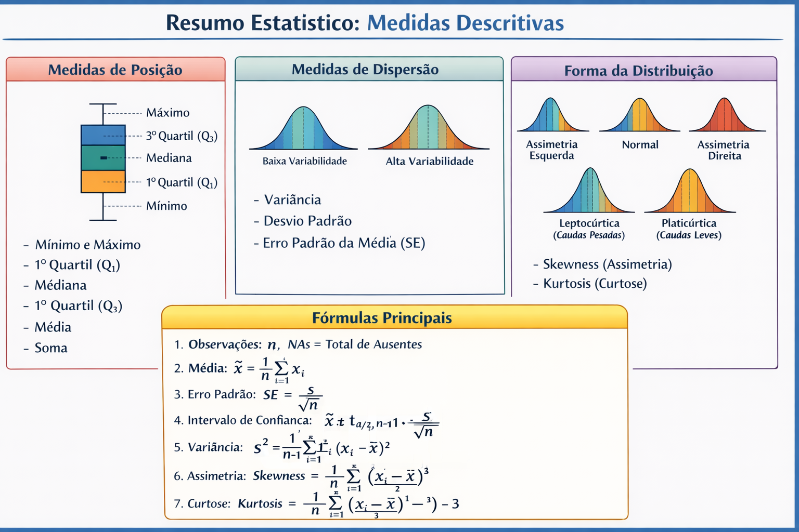
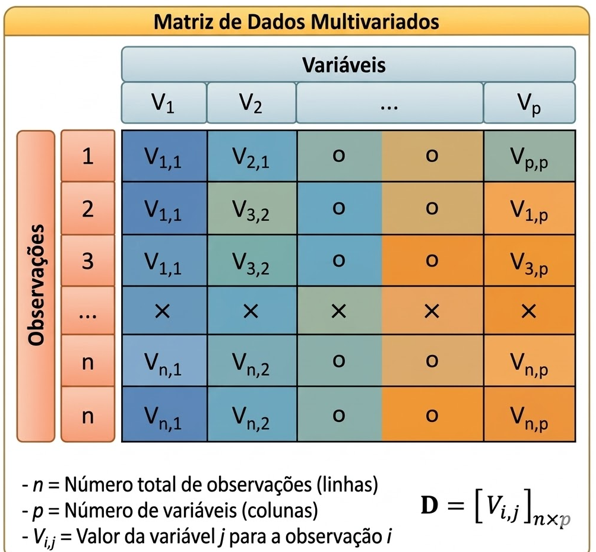

3 Medidas Descritivas
3.1 Introdução
A análise exploratória de dados tem como objetivo sintetizar, descrever e compreender as principais características de um conjunto de dados. Uma forma clássica de fazer isso é por meio de um resumo estatístico, no qual cada variável (coluna) é descrita por um conjunto padronizado de medidas.
Essas medidas permitem identificar:
- Tendência central (onde os dados se concentram);
- Dispersão (o quanto os dados variam);
- Forma da distribuição (simetria e caudas);
- Presença de valores ausentes.

Neste capítulo, estudamos um conjunto completo de estatísticas frequentemente organizadas em um data frame resumo, contendo uma linha para cada medida e uma coluna para cada variável.
3.2 Medidas
Considere um conjunto de dados com \(p\) variáveis, onde:
- Cada coluna representa uma variável;
- Cada linha representa uma medida descritiva.

As medidas analisadas são:
- Número de observações (\(n\))
- Número de valores ausentes (NAs)
- Mínimo e máximo
- Quartis
- Média, mediana e soma
- Erro padrão e intervalo de confiança da média
- Variância e desvio padrão
- Assimetria (skewness)
- Curtose (kurtosis)
Definição 3.2.1
O número de observações corresponde à quantidade de valores válidos (não ausentes) em uma variável.
\[ n = \text{número de observações disponíveis} \] Essa medida indica o volume efetivo de dados utilizados na análise, influenciando diretamente a confiabilidade dos resultados.
O número de observações, usualmente representado por \(n\), indica a quantidade de dados efetivamente disponíveis para análise. Essa medida é fundamental, pois influencia diretamente a confiabilidade das estimativas estatísticas e a robustez das conclusões obtidas. Em geral, quanto maior o valor de \(n\), maior tende a ser a estabilidade dos resultados.
Definição 3.2.2
Valores ausentes representam dados não observados ou não registrados em uma variável.
\[ \text{NAs} = \text{número total de valores ausentes} \]
A presença de valores ausentes pode reduzir o tamanho efetivo da amostra e introduzir vieses na análise.
Valores ausentes correspondem a informações não registradas ou indisponíveis em um conjunto de dados. A presença desses valores pode comprometer análises estatísticas, reduzindo o tamanho efetivo da amostra e potencialmente introduzindo vieses. Por isso, é essencial identificá-los e tratá-los adequadamente antes de proceder com a análise.
Essas medidas são fundamentais para avaliar a qualidade dos dados. Um grande número de valores ausentes pode comprometer análises posteriores.
3.2.1 Medidas de Posição
Definição 3.2.1.1
O valor mínimo corresponde ao menor valor observado em um conjunto de dados.
\[ \min(x) \]
Define o limite inferior dos dados e auxilia na identificação de valores extremos.
Definição 3.2.1.2
O valor máximo corresponde ao maior valor observado em um conjunto de dados.
\[ \max(x) \]
Define o limite superior da amostra.
Essas medidas permitem identificar a amplitude dos dados e possíveis valores extremos.
Definição 3.2.1.3
Os quartis são medidas que dividem os dados ordenados em quatro partes iguais.
\[ Q_1, Q_2, Q_3 \]
O primeiro quartil (Q1) corresponde a 25% dos dados, o segundo (mediana) a 50% e o terceiro (Q3) a 75%.
São úteis para análise de dispersão e identificação de outliers.
Definição 3.2.1.4
A mediana é o valor central de um conjunto de dados ordenados.
\[ \text{Mediana} = \begin{cases} x_{\left(\frac{n+1}{2}\right)}, & \text{se } n \text{ ímpar} \\ \frac{x_{(n/2)} + x_{(n/2+1)}}{2}, & \text{se } n \text{ par} \end{cases} \]
É uma medida robusta, pouco sensível a valores extremos.
Definição 3.2.1.5
A média aritmética representa o valor médio dos dados.
\[ \bar{x} = \frac{1}{n} \sum_{i=1}^{n} x_i \]
É amplamente utilizada, porém sensível à presença de outliers.
Definição 3.2.1.6
A soma corresponde ao total acumulado dos valores observados.
\[ \sum_{i=1}^{n} x_i \]
É útil em análises de quantidades totais.
3.2.2 Medidas de Dispersão
Definição 3.2.2.1
A variância mede a dispersão dos dados em torno da média.
\[ s^2 = \frac{1}{n-1} \sum_{i=1}^{n} (x_i - \bar{x})^2 \]
Valores maiores indicam maior variabilidade.
Definição 3.2.2.2
O desvio padrão é a raiz quadrada da variância.
\[ s = \sqrt{s^2} \]
Expressa a dispersão na mesma unidade da variável.
Definição 3.2.2.3
O erro padrão da média mede a variabilidade da média amostral.
\[ SE = \frac{s}{\sqrt{n}} \]
Indica a precisão da estimativa da média populacional.
Definição 3.2.2.4
O intervalo de confiança fornece uma faixa de valores plausíveis para a média populacional.
\[ \bar{x} \pm t_{\alpha/2, n-1} \cdot \frac{s}{\sqrt{n}} \]
Permite inferência estatística com um nível de confiança especificado.
3.2.3 Medidas de Forma da Distribuição
Definição 3.2.3.1
A assimetria mede o grau de inclinação da distribuição dos dados.
\[ \text{Skewness} = \frac{1}{n} \sum_{i=1}^{n} \left(\frac{x_i - \bar{x}}{s}\right)^3 \]
Indica se a distribuição é simétrica ou possui caudas assimétricas.
Interpretação:
- Skewness = 0 → distribuição simétrica
- Skewness > 0 → cauda à direita
- Skewness < 0 → cauda à esquerda
Definição 3.2.3.2
A curtose avalia o peso das caudas da distribuição.
\[ \text{Kurtosis} = \frac{1}{n} \sum_{i=1}^{n} \left(\frac{x_i - \bar{x}}{s}\right)^4 - 3 \]
Permite identificar distribuições com caudas pesadas ou leves.
Interpretação:
- Kurtosis ≈ 0 → distribuição normal
- Kurtosis > 0 → caudas pesadas
- Kurtosis < 0 → caudas leves
3.3 Interpretação Conjunta
Ao analisar essas medidas em conjunto, é possível:
- Detectar outliers;
- Avaliar dispersão;
- Identificar assimetria;
- Entender o formato da distribuição;
- Verificar a qualidade dos dados.
3.4 Aplicações Práticas
Esse conjunto de estatísticas é amplamente utilizado em:
- Análise exploratória de dados (EDA);
- Relatórios estatísticos;
- Controle de qualidade;
- Economia e finanças;
- Ciências sociais e biomédicas. ::::